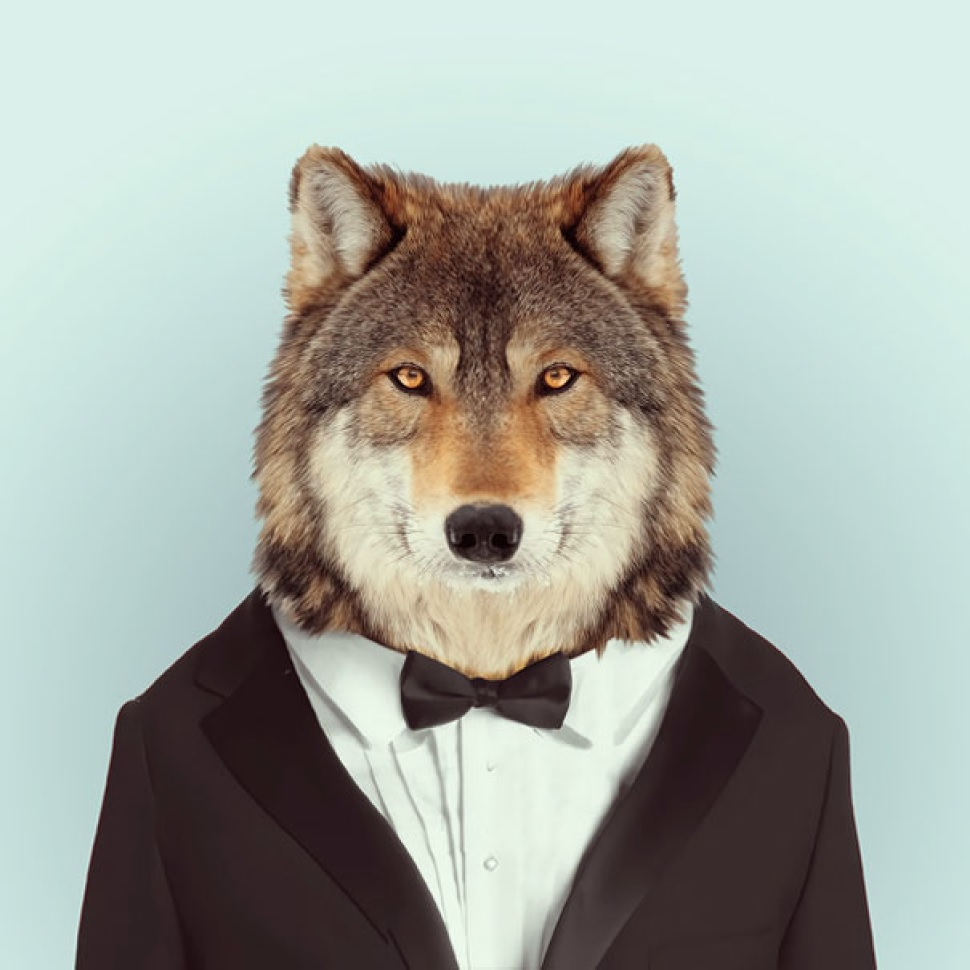

Fascinating Pics
Animals
Anna W. once said that your style should be “unique for yourself and yet identifiable for others”, and these words definitely play out in Yago Partal’s “Zoo Portraits” series. The Paris-based artist presents portraits of animals that are dressed up in carefully-picked and really stylish outfits. If you pay close attention to each portrait, you‘ll notice that their clothes actually match their characters. From elegant to hip, or from sporty to dashing – these animals can pull it all off!
Tweet
